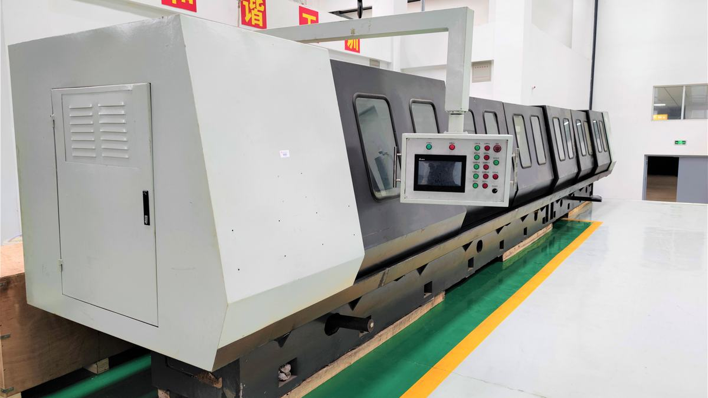
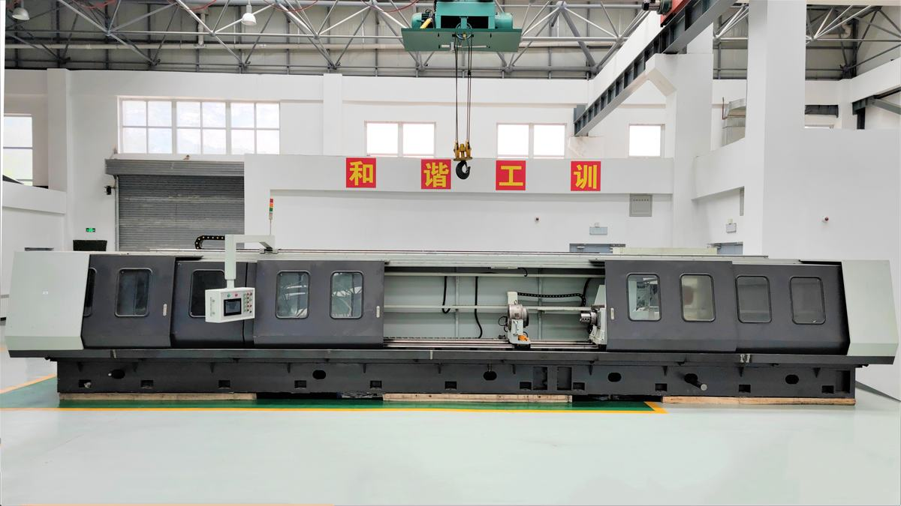
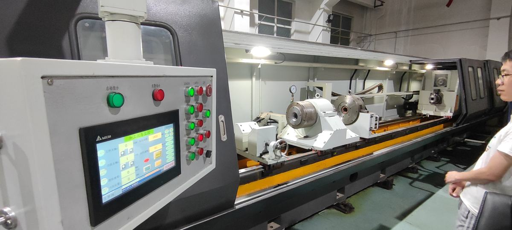

（1）设计目的
本设计内容涵盖机械学、光学、物理学、力学、控制学等学科，属于机械制造技术领域，设计针对BTA（Boring and Trepanning Association）深孔加工直线度超差现象，通过分析深孔加工过程中钻头磨损、钻杆振动、切屑排出、直线度精密检测及直线度主动纠偏等关键问题，设计研发了ZWKA-2108精密高效深孔加工机床，解决多因素影响下深孔加工直线度控制难题。
（2）设计创新
本设计主要亮点：(1) 建立一种机制——分析影响深孔直线度的主要因素，探求各主要因素与直线度之间的映射关系，建立多因素作用下直线度误差的抵消机制。(2)解决五大问题——深孔刀具的精确导向问题、深孔钻杆颤振问题、深孔加工高效排屑及冷却问题、深孔直线度精密检测问题和深孔直线度偏斜问题。(3)发明五项技术——刀具自导向技术、钻杆振动抑制技术、高效排屑及冷却技术、直线度精密检测技术以及直线度主动纠偏技术等。(4) 研发系列装备——融合五项技术，创新研制精密高效BTA深孔加工机床及装备，通过理论计算、试验分析及结构优化，寻求最优解决方案。
（3）设计价值
本设计研发的ZWKA-2108精密高效深孔加工机床技术指标优于国内外现有技术。质量检测结果显示：加工孔径为Φ40mm，长度为1m至3m的深孔，深孔直线度达0.05mm/m、孔径尺寸精度达IT7级、深孔表面粗糙度为0.73μm。经济指标方面：通过使用该技术装备，相关企业新增产值4.87亿元，新增利税3082万元，增收节支总额6243万元。
本设计促进行业科技进步情况：本设计研发的ZWKA-2108精密高效深孔加工机床有效控制了BTA深孔加工直线度误差，提高了深孔加工的精度和效率，推动了国内深孔加工直线度控制及装备技术的发展，使国内深孔加工装备行业水平达到甚至超过了发达国家技术水准。
应用推广情况：目前该技术已成功应用于北京卫星制造厂、晋西车轴股份有限公司以及太原重工轨道交通设备有限公司等9家企业，为国防现代化建设和山西经济转型发展做出了贡献。
本设计共获得美国发明专利2项，中国发明专利24项，实用新型专利2项，出版学术专著1部，发表学术论文139篇。
（1）技术创新点1：流体动压作用下的BTA深孔刀具自导向技术
1）总体描述
利用切削液动压润滑理论，结合BTA深孔加工原理，通过改变刀具系统结构参数、控制切削液流体力、调节刀具运动状态、实现钻头的自导向，是控制深孔直线度的一种行之有效的方法。新型动压结构包括上、下两平板且两平板有楔角和相对运动，两平板间有充足的油液供给，供给方向从截面大端流入，小端流出。四个楔形油膜均匀分布，它们作用于楔形凸起，犹如四爪卡盘夹紧一个工件。均匀分布的油膜作用力使楔形体连同与之固定连接的钻头体、钻杆被定位于深孔中心，增加楔形体数量还可以提高系统稳定性。
2）创新之处
①借鉴滑动轴承的动压工作原理，构建楔形空间，形成动压油膜。通过周向布置楔形体，获得多个方向的动压支撑，防止刀具出现的偏斜，提高深孔加工的精度。
②楔形体有沿其圆周方向均匀分布的楔形槽，楔形槽与工件孔内壁间有动压油膜，动压油膜的压力高于非楔形部分液体的压力，利用切削液的动压特性实现刀具系统的自定心、自导向。
③钻杆为顺锥结构，对钻杆的锥度给出了最佳的选择取值，利用顺锥结构实现深孔钻杆的主动纠偏，可以提高深孔直线度及其它形位公差的精度。
3）专利成果
[1]发明专利：自纠偏深孔加工刀具系统（ZL201510087691.8）
[2]美国发明专利：Rear-mounted deep hole machining on-line detection and deviating correction device（US9630260B1）
[3]发明专利：一种纠偏钻杆（ZL201410367951.2）
[4]实用新型专利：一种斜面结构后置的孔加工刀具（ZL201520116318.6）
（2）技术创新点2：BTA深孔钻杆振动磁流变液抑制技术
1）总体描述
BTA深孔加工的直线度误差和深孔钻杆振动密切相关，为了防止钻杆在深孔加工过程中非线性扰动力作用下产生破坏性失稳，可向BTA钻杆系统引入附加阻尼。磁流变液减振器在封闭的极板中填充磁流变液，当外部的振动通过导杆传到挤压板时，挤压板会与上下外壳进行相对挤压运动，磁流变液在挤压运动下向运动的反方向运动，经过通电线圈产生的磁场时，发生磁流变效应，产生屈服应力来抵抗液体流动进而阻止挤压板运动，从而减少外部振动。
2）创新之处
①减振器采用挤压模式的工作方式，在较小的位移下，可以产生较大的磁流变液阻尼力，达到较好的减振效果。
②将输油器、辅助支撑、磁流变液阻尼器等结构组合成一体，从多个方面对钻杆进行减振。
③减振装置从机械减振系统、磁流变液阻尼器、优选辅助支撑位置、智能控制等多方面，提高了深孔钻杆辅助支撑的减振功效。
3）专利成果
[1]发明专利：一种带有减振功能的深孔加工输油器（ZL201610385570.6）
[2]发明专利：一种带辅助支撑的圆柱深孔镗削装置（ZL201210210090.8）
[3]发明专利：一种适用于锥形深孔镗削的深孔机床（ZL201210210091.2）
[4]发明专利：复合式智能深孔加工减振器及优选辅助支撑位置自移动控制方法（ZL201610398101.8）
（3）技术发明创新点3：多级负压作用下的BTA深孔加工高效排屑及冷却技术
1）总体描述
在深孔加工过程中，切削液入口压力对深孔直线度有重大的影响，随着切削液入口压力的减小，深孔钻杆受到的切削液流体作用力不断减小，进而削弱了切削液流体力对深孔钻杆的涡动作用和挤压效应，对减小深孔直线度误差有积极的意义。
多级负压结构利用压力的负压流和切屑流相互碰撞，进入混合腔中，进行速度和压力均衡；流体从混合腔进一步流入扩散腔，伴随着速度减小、压力升高，并于分流腔内分出两股流体，一股流出，另一股与二级喷射流再次碰撞混合，重复上述能量交换的过程，来明显降低入口压力。
2）创新之处
①抽屑装置分为多级负压，同时每一级负压间隙均可以手动调节，以提高实际喷射效率。
②多级负压抽屑装置，带有自冷式负压抽屑箱，外壁的循环水系统可实现对切削液的冷却。
③多级负压抽屑装置，切削液抽取口与排放口间隔设置，最后一级负压抽屑采用高效喷雾器对切削液再次冷却。
3）取得成果
3）专利成果
[1]发明专利：一种设有负压抽屑装置的高速深孔加工钻机（ZL201410102160.7）
[2]发明专利：深孔机床风动式负压抽屑双冷却系统（ZL201310607386.8）
[3]实用新型专利：一种带有凸起的切削工具（ZL201520116320.6）
（5）技术创新点4：基于压电原理的BTA深孔加工直线度主动纠偏技术
1）总体描述
深孔加工直线度主动控制系统包括角度可调节的径向可倾瓦块、执行组件、检测系统、控制系统及BTA刀具系统。角度可调节的径向可倾瓦块共四组，每组可倾瓦块通过三个执行组件与钻杆形成连接；执行组件由空心螺杆套筒，形状记忆合金、压电陶瓷及支撑关节组成，与压力传感器、控制计算机、记忆合金控制系统、压电陶瓷驱动电源、开关选择电路相连，形成闭环控制回路，实现楔形瓦块角度的实时调整。可倾瓦块与已加工孔壁有相对旋转运动，两表面间形成动压油楔，多个油楔的合力使BTA刀具系统趋于稳定。通过实时调节可倾瓦块与钻杆之间的倾斜角度，调整切削液进出口间的楔形间隙，调节油膜压力，类似机床的四爪卡盘，控制钻杆的稳定性，使其一直处于理想位置。
2）创新之处
①带有径向可倾瓦块的深孔加工主动纠偏系统，在靠近深孔刀具端的钻杆与已加工工件孔壁之间设有供切削液流动的连续变间隙，连续变间隙内的流动切削液形成用于夹紧钻杆的动压油膜。
③通过控制系统包括压电陶瓷、形状记忆合金、开关选择电路组件、控制计算机、压电陶瓷控制电源及压力传感器形成控制回路，实时调整径向可倾瓦块的受力状态，实现深孔直线度的主动控制。
3）专利成果
[1]美国发明专利：Deep hole machining on-line deviation correction device based on laser detection（US9561547B1）
[2]发明专利：深孔钻削在线检测与纠偏系统（ZL201210111345.5）
[3]发明专利：激光制导深孔钻削在线检测与纠偏系统（ZL201210111370.3）
[4]发明专利：小直径深孔钻削激光制导在线检测与纠偏系统（ZL201210111367.1）
[5]发明专利：基于激光探测原理的深孔加工在线纠偏装置（ZL201510774720.8）
[6]发明专利：深孔加工在线检测与纠偏装置（ZL201310097776.5）



深孔加工直线度控制,主动纠偏技术及装备
深孔加工装备
间接服务高端制造
BTA 深孔加工细分领域领先
制造工艺攻关样本